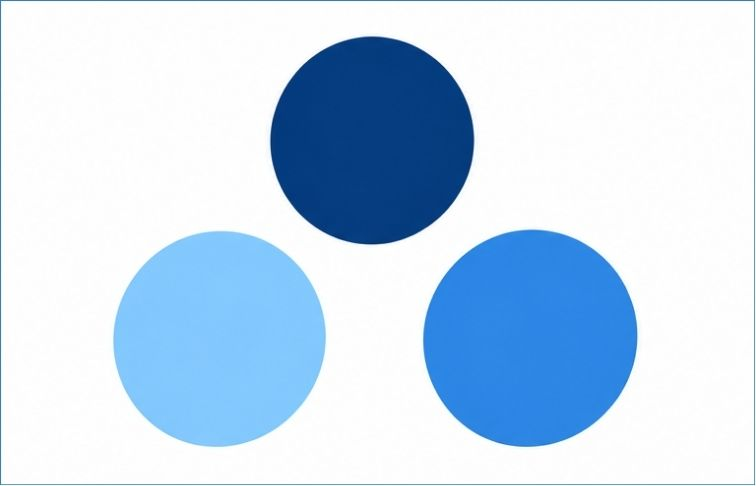
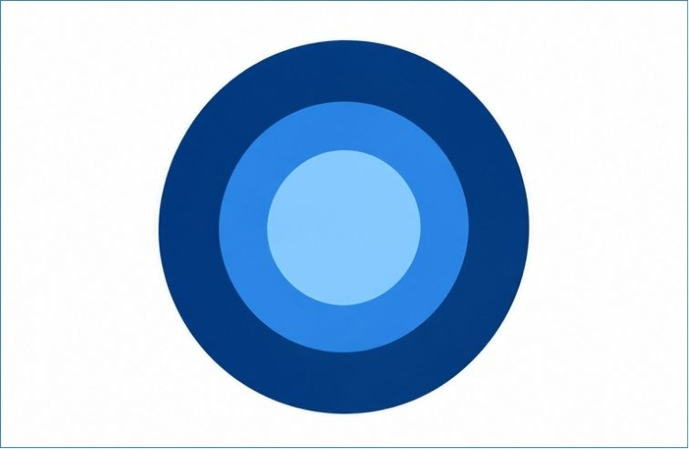
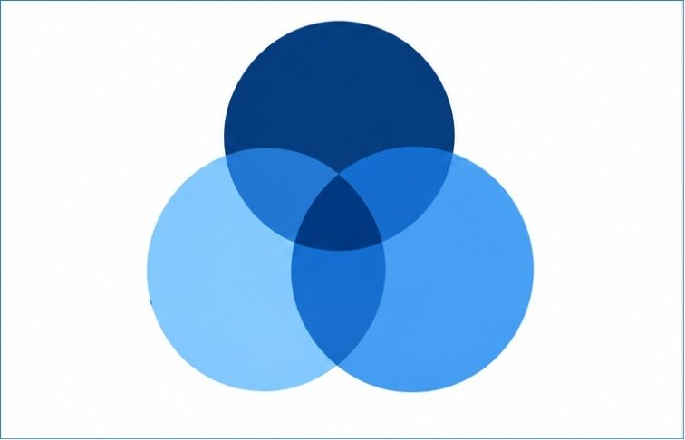
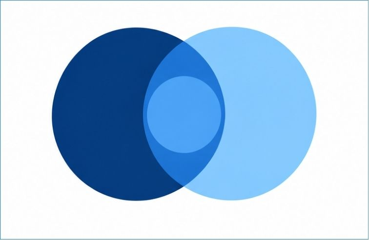
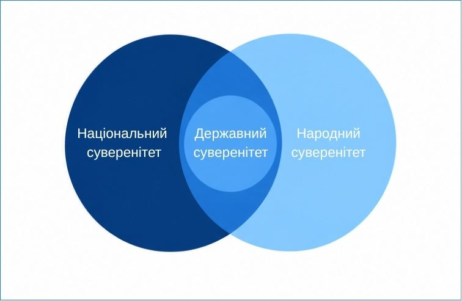
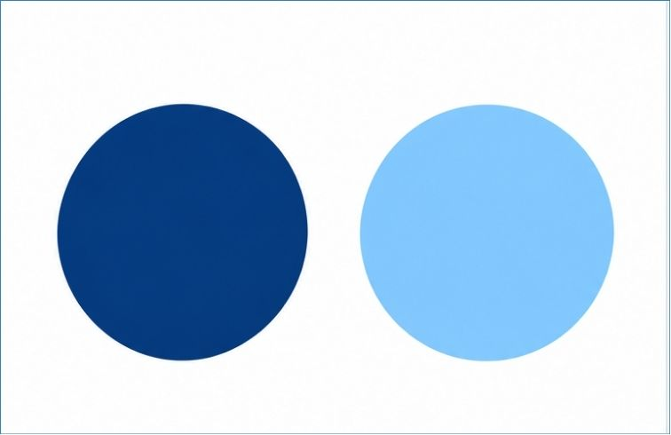
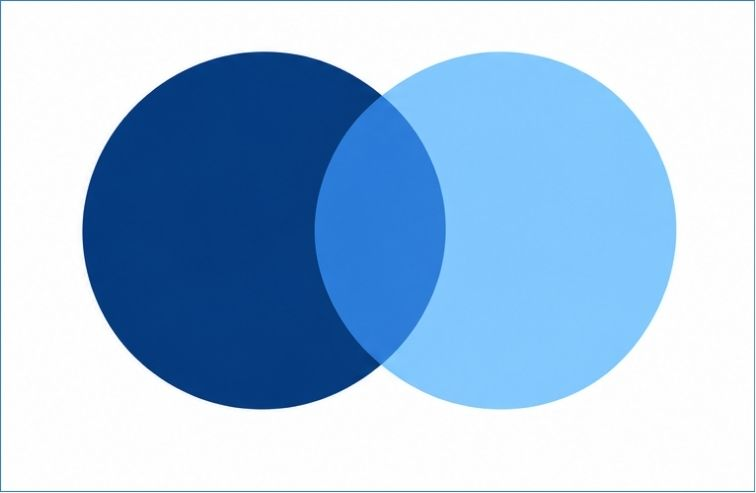
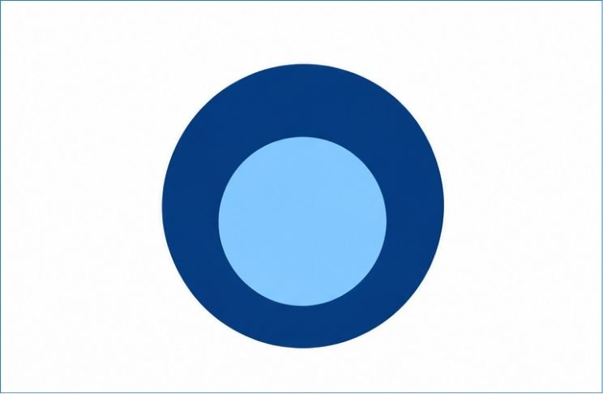
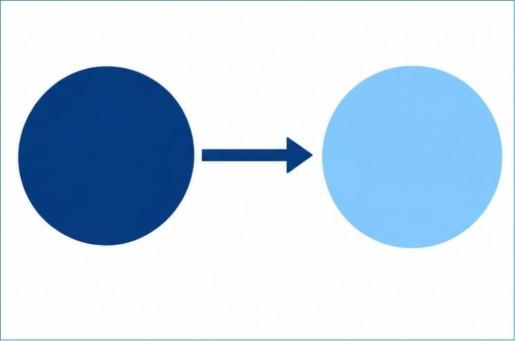
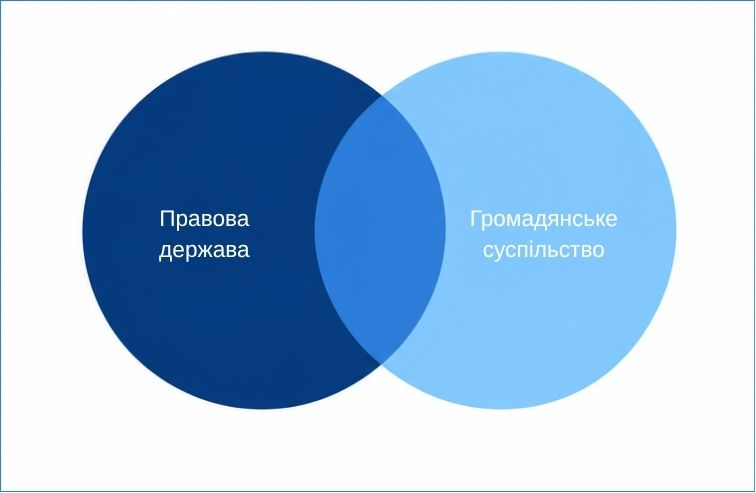

Прокоментуйте два історичні підходи до розуміння сутності держави:
Натисніть на картку, щоб перегорнути її та побачити наукове визначення:
Історично сформована суверенна політико-територіальна організація суспільства, що має спеціальний апарат управління й примусу та видає загальнообов'язкові закони.
Розподіліть запропоновані ознаки на обов'язкові та факультативні:
| Характеристика | Група ознак |
|---|---|
| Збройні сили (армія) | |
| Територія, обмежена кордонами | |
| Державна символіка (герб, прапор, гімн) | |
| Публічна влада | |
| Власна грошова система / грошова одиниця | |
| Апарат примусу | |
| Державна (офіційна) мова | |
| Податкова система | |
| Система права |
Натисніть по черзі на термін та його визначення, щоб з'єднати їх парою:
Перевірка розуміння на прикладах: Позначте прапорцями твердження, які належать до відповідної категорії:
| Публічна влада | Державна влада |
|---|---|
Натисніть по черзі на термін та його визначення в кожному блоці, щоб з'єднати їх парою:
Перевірка розуміння на прикладах: Позначте прапорцями правильні категорії для наведених прикладів:
| Механізм держави | Апарат держави | Апарат примусу |
|---|---|---|
Натисніть по черзі на термін та його визначення в кожному блоці, щоб з'єднати їх парою:
Перевірка розуміння на прикладах: Позначте прапорцями правильні категорії для наведених прикладів:
| Правова система | Система права | Система законодавства |
|---|---|---|
Натисніть на картку, щоб перегорнути її та побачити наукове визначення:
(від латин. functio — виконання, вчинення) — основні напрямки діяльності держави, що виражають її сутність і призначення.
Розподіліть приклади діяльності за територіальною спрямованістю та сферою суспільного життя:
| Приклад діяльності держави | Територіальна спрямованість | Сфера суспільного життя |
|---|---|---|
| 1. Виплата пенсій та соціальних допомог | ||
| 2. Участь у міжнародних договорах про захист прав людини | ||
| 3. Захист державної та приватної власності | ||
| 4. Організація міждержавного культурного обміну | ||
| 5. Охорона конституційного ладу та правопорядку | ||
| 6. Створення умов для розвитку виробництва на державних підприємствах | ||
| 7. Участь у міжнародному розподілі та інтеграції виробництва і праці | ||
| 8. Гарантування екологічної безпеки та підтримка екологічної рівноваги | ||
| 9. Допомога населенню іншої країни після стихійного лиха | ||
| 10. Забезпечення умов для діяльності політичних партій та громадських об'єднань | ||
| 11. Участь у міжнародних програмах охорони довкілля | ||
| 12. Забезпечення доступу громадян до освіти |
Визначте методи та форму здійснення для кожного заходу:
| Захід державної діяльності | Метод Переконання | Метод Примусу | Метод Заохочення | Форма здійснення |
|---|---|---|---|---|
| Припинення поліцією правопорушення та затримання правопорушника | ||||
| Вручення державної нагороди працівникові за сумлінне виконання службових обов'язків | ||||
| Проведення державним органом роз'яснювальної кампанії щодо правил пожежної безпеки | ||||
| Надання громадянину передбаченої законом пільги за наявності встановлених законом підстав | ||||
| Прийняття Верховною Радою закону про державний бюджет | ||||
| Перевірка державним органом виконання підпорядкованою установою покладених на неї завдань | ||||
| Встановлення державним органом обов'язкових правил роботи для підпорядкованих установ | ||||
| Проведення поліцією профілактичної бесіди з підлітками для запобігання правопорушенням | ||||
| Розподіл посадових обов'язків між працівниками державної установи | ||||
| Внесення змін до закону, який встановлює відповідальність за порушення правил академічної доброчесності | ||||
| Встановлення для державної установи обов'язкових вимог щодо використання бюджетних коштів на придбання обладнання | ||||
| Ухвалення судового рішення про накладення штрафу на особу за адміністративне правопорушення |
Натисніть по черзі на термін та відповідне визначення:
Оберіть правильну графічну схему співвідношення цих понять серед 4 запропонованих варіантів:




Правильна схема та пояснення:

• Чому є перетин Народного та Національного суверенітету? Зоною перетину обох понять є єдина політична нація. Проте національний суверенітет включає також право бездержавної нації на самовизначення. А народний суверенітет — це передусім влада народу як джерела влади.
• Чому місце Державного суверенітету всередині перетину? Державний суверенітет пов’язаний із народним і національним суверенітетом: держава є формою політичної організації, через яку реалізується політична воля народу та нації.
Оберіть одну правильну відповідь для кожного завдання:
Держава самостійно визначає свою внутрішню політику, ухвалює закони, встановлює податки та не підпорядковується владі інших держав. Яке поняття найточніше характеризує цю ситуацію?
У державі джерелом влади визнається народ, який реалізує її безпосередньо та через обрані ним органи державної влади. Про який вид суверенітету йдеться?
Народ, який має спільну історію та культуру, прагне самостійно визначати свій політичний статус, зберігати власну мову й культурну самобутність. Яке поняття найточніше відображає ці прагнення?
Визначте, який вид суверенітету характеризує кожне положення:
а. Громадяни через вибори формують органи влади
б. Держава самостійно визначає свою зовнішню політику
в. Нація відстоює право на збереження своєї мови та культурної самобутності.
Чи можна поставити знак рівності між демократичною та правовою державою?
Які з наведених ознак характеризують правову державу? Позначте всі правильні варіанти:
Натисніть на картку, щоб перегорнути її та побачити наукове визначення:
Держава, у якій влада здійснюється на основі права, забезпечується верховенство закону, гарантуються права і свободи людини та діє принцип взаємної відповідальності держави й громадян.
Сукупність вільних громадян і незалежних соціальних інститутів, які захищають свої права, інтереси та розв'язують спільні проблеми, розвиваються без втручання держави та мають на неї визначальний вплив.
Оберіть правильну графічну схему співвідношення цих понять серед 4 запропонованих варіантів:




Правильна схема та пояснення:

Правова держава і громадянське суспільство не можуть існувати одне без одного, але вони не тотожні.
• Чому є автономні зони? Громадянське суспільство має сферу приватного життя, куди держава законом не втручається (сім'я, релігія, бізнес). Держава має виключні функції (правосуддя, оборона).
• Що в зоні перетину? Громадський контроль за владою, вибори, петиції, волонтерство.
Оберіть одну правильну відповідь. Перевірка та пояснення з'являться автоматично після вашого вибору.